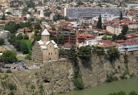

hello fellas this is tbilisi
Tbilisi is the capital, and the largest city in Georgia. It was founded in the 5th century by the Georgian king, Vakhtang Gorgasali. According to legend, when he was hunting, he killed a pheasant which dropped into hot water.
dojian
